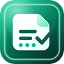

AI Chat ExportStart with your AI conversation
Export your AI chats locally, in seconds.
Open ChatGPT, Claude, or Gemini first. AI Chat Export will meet you there so you can export your first conversation.
Recommended
Export your first chat in seconds
Pinning can wait. The important part is opening a supported AI page where AI Chat Export can appear.
Then make it easy to find
Pin AI Chat Export when you are ready.
Chrome requires this step to be done manually. Click the puzzle icon, find AI Chat Export, then click the pin icon.
If it is not pinned yet, AI Chat Export still works on supported AI pages.
AI Chat Export stores settings and daily free quotas only. It does not store prompts, replies, platform cookies, access tokens, or refresh tokens.